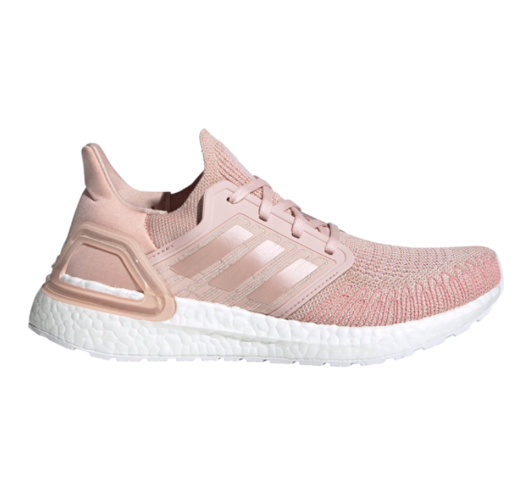
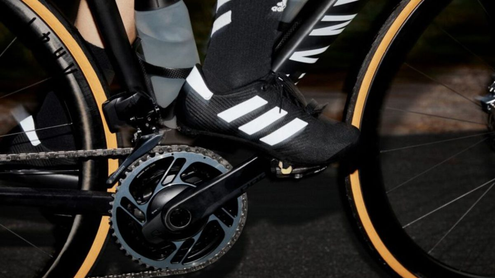

Zapatillas de marca que podemos comprar con descuento en el Cyber Monday de El Corte Inglés
Las zapatillas se coronan como el calzado favorito y por eso, nunca tenemos suficientes. Son tan cómodas y dan tanto juego que queremos llevarlas a todas horas con todo tipo de prendas.
Aire retro para la vuelta de Adidas al ciclismo
La firma alemana Adidas anunció su regreso al ciclismo 15 años después con 'The Road Shoe', una zapatilla pensada para todo tipo de ciclistas.
Bad Bunny lleva las zapatillas adidas de skate más exclusivas en el vídeo de Yo visto así
Bad Bunny demuestra su amor por las zapatillas adidas de skate en el vídeo de Yo visto así, en el que aparecen los modelos más destacados de la marca.